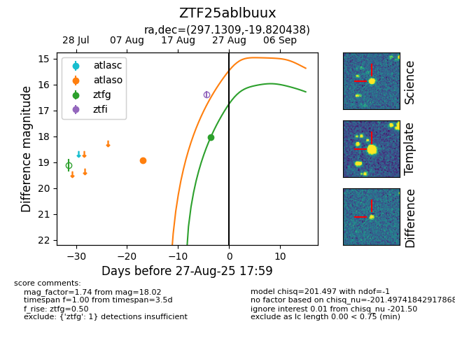

FINK: ZTF25ablbuux
Lasair: ZTF25ablbuux
ALeRCE: ZTF25ablbuux
ZTF25ablbuux (ztf,fink)
equatorial (ra, dec) = (297.1309,-19.82044)
galactic (l, b) = (20.7979,-21.16229)

last atlaso=18.52, ztfg=18.02
2 atlaso, 1 ztfg detections